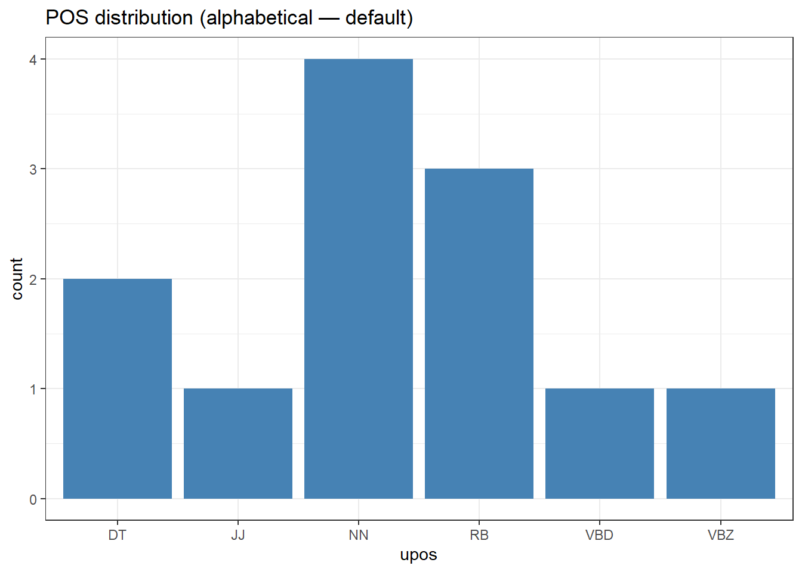
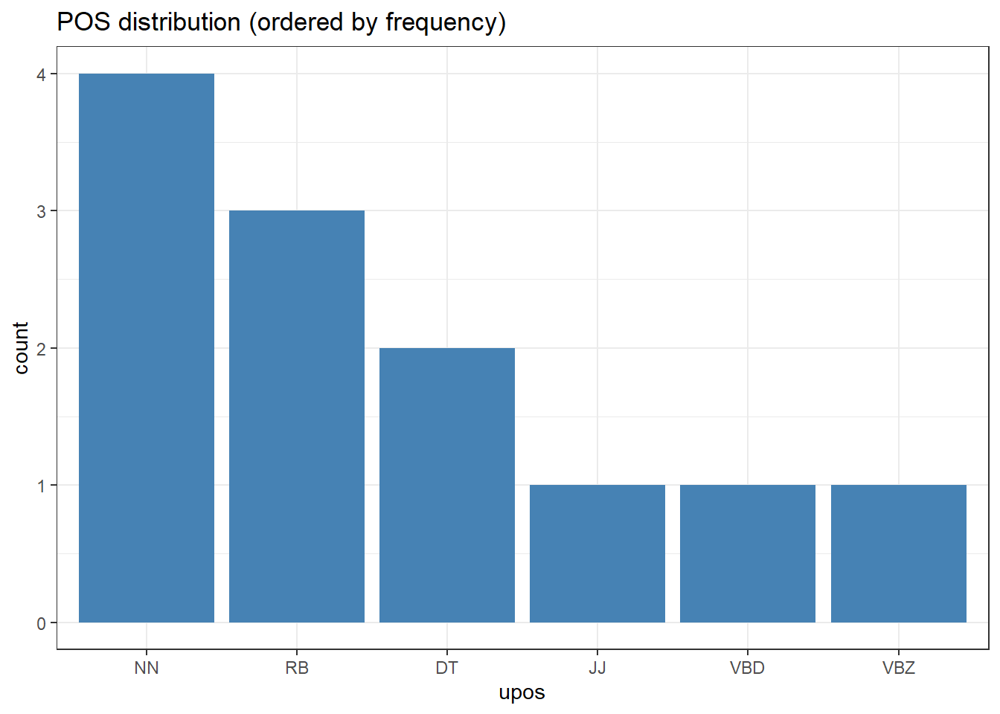
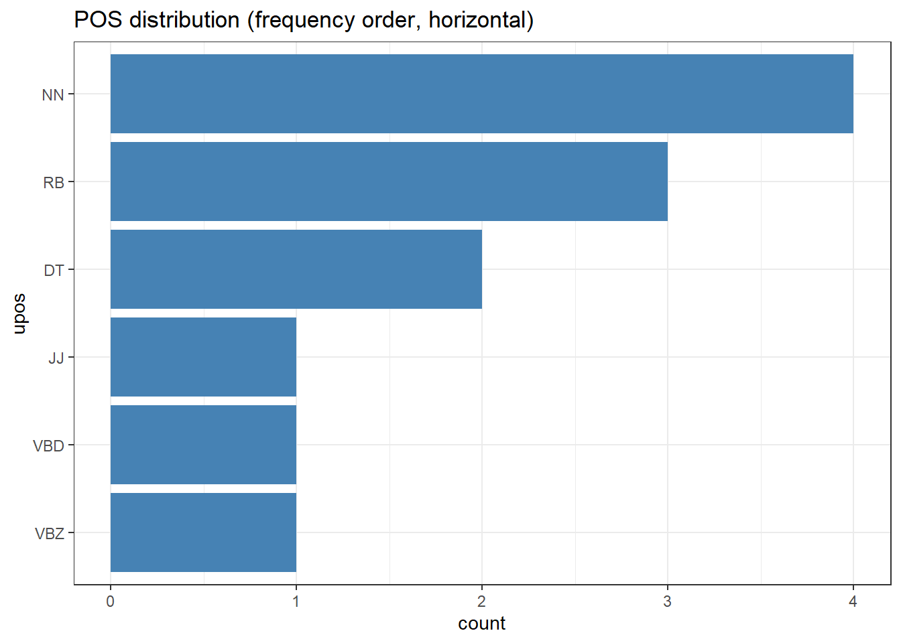
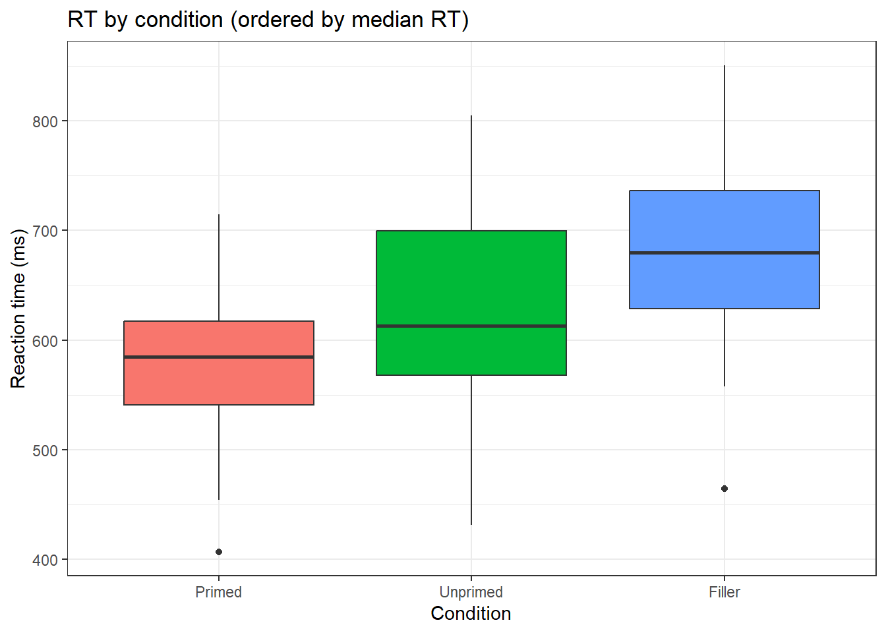
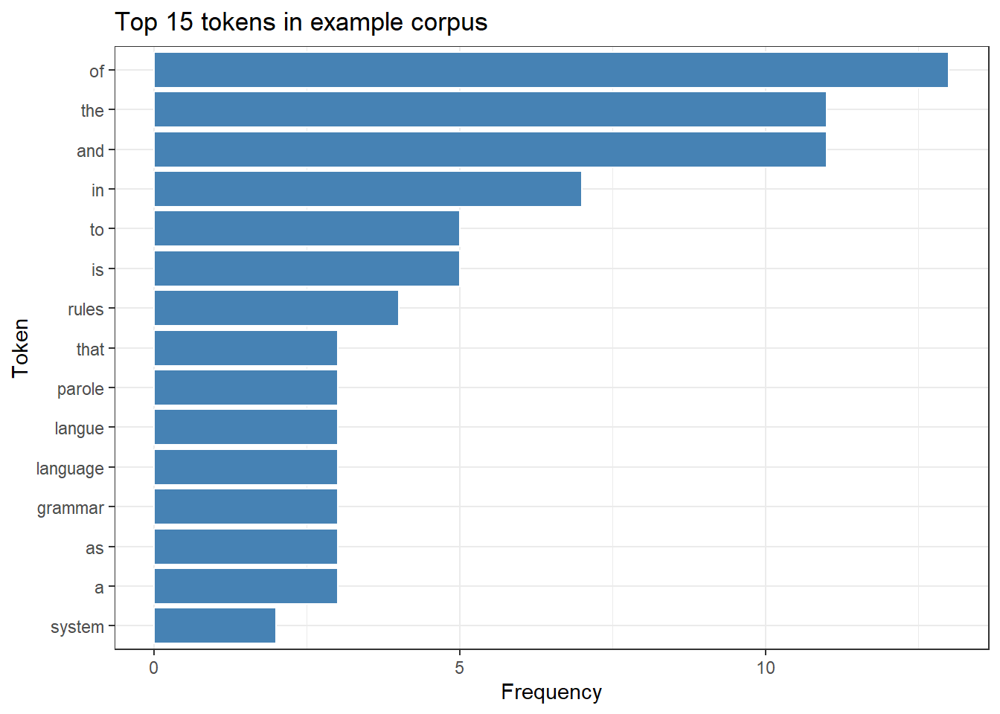

# Run once — comment out after installation
install.packages("tidyverse") # stringr, dplyr, tidyr, purrr, ggplot2, forcats
install.packages("here") # reproducible file paths
install.packages("flextable") # formatted tables
install.packages("quanteda") # tokenisation and corpus tools
install.packages("tm") # text-mining utilities (stopwords, stemming)
install.packages("checkdown") # interactive quiz questions3 String Processing in R
4 Introduction
This chapter introduces string processing in R — the art of manipulating, searching, extracting, and transforming character data. String processing is a foundational skill for linguistic research: nearly every corpus study, text-mining project, or annotation pipeline begins with reading raw text and ends with cleaned, structured character data ready for analysis.
This chapter covers a progression from basic string operations in base R and the stringr package, through regular expressions, through text-cleaning pipelines, to tokenisation with quanteda. Each section introduces functions with linguistic examples and includes worked exercises.
NoteLearning Objectives
By the end of this chapter you will be able to:
- Apply core base R string functions (
nchar,paste,substr,gsub,grep,tolower,toupper) - Use the full suite of
stringrfunctions for detecting, extracting, replacing, splitting, padding, and combining strings - Use
str_glue()andstr_glue_data()for string interpolation in reports and data pipelines - Work with factors as strings using
forcats— relabel, reorder, collapse, and filter factor levels - Format strings for table output using padding, truncation, and number formatting
- Handle Unicode, encoding issues, and non-ASCII characters (IPA, non-Latin scripts)
- Write regular expressions including character classes, quantifiers, anchors, alternation, named capture groups, and lookahead/lookbehind
- Build reproducible text-cleaning pipelines combining multiple string operations
- Tokenise text using
quantedaand understand the difference between word, sentence, and character tokenisation
5 Setup
Installing Packages
Loading Packages
Loading Example Texts
Throughout this chapter we work with four example texts.
WarningTODO: data files required
This section expects the following files in the project’s data/ folder (copy them from the original LADAL string tutorial’s data repository):
data/tx1.rdadata/tx2.rdadata/tx3.rdadata/tx4.rda
# Text 1: paragraph about grammar (single string)
exampletext <- base::readRDS(here::here("data", "tx1.rda"))
# Text 2: same paragraph split into sentences (character vector)
splitexampletext <- base::readRDS(here::here("data", "tx2.rda"))
# Text 3: paragraph about Ferdinand de Saussure (single string)
additionaltext <- base::readRDS(here::here("data", "tx3.rda"))
# Text 4: three short sentences (character vector)
sentences <- base::readRDS(here::here("data", "tx4.rda"))
# Inspect
cat("exampletext (first 120 chars):\n", substr(exampletext, 1, 120), "\n\n")exampletext (first 120 chars):
Grammar is a system of rules which governs the production and use of utterances in a given language. These rules apply t splitexampletext:[1] "Grammar is a system of rules which governs the production and use of utterances in a given language."
[2] "These rules apply to sound as well as meaning, and include componential subsets of rules, such as those pertaining to phonology (the organisation of phonetic sound systems), morphology (the formation and composition of words), and syntax (the formation and composition of phrases and sentences)."
[3] "Many modern theories that deal with the principles of grammar are based on Noam Chomsky's framework of generative linguistics." sentences:[1] "This is a first sentence." "This is a second sentence."
[3] "And this is a third sentence."
TipCharacter Vectors in R
A character vector is R’s basic data structure for text. Each element is a separate string — exampletext is length 1 (one long string), while splitexampletext is length n (one element per sentence). Most stringr functions are vectorised: they accept vectors of any length and return a result of the same length, making it easy to process many strings at once.
6 Base R String Functions
NoteSection Overview
What you will learn: The most important string functions available in base R — no packages required. These underpin everything else and appear throughout code you will encounter in the wild.
Case Conversion
String Length
Substrings
# Extract characters 1–60
substr(exampletext, 1, 60)[1] "Grammar is a system of rules which governs the production an"[1] "[REDACT is a system of ru"Combining Strings
paste("Participant", 1:4, sep = "_") # with separator[1] "Participant_1" "Participant_2" "Participant_3" "Participant_4"paste0("Item", LETTERS[1:4]) # no separator[1] "ItemA" "ItemB" "ItemC" "ItemD"paste(sentences, collapse = " | ") # collapse vector to one string[1] "This is a first sentence. | This is a second sentence. | And this is a third sentence."Pattern Matching and Replacement
# grep: indices of matching elements
grep("grammar", splitexampletext)[1] 3# grepl: logical vector
grepl("grammar", splitexampletext)[1] FALSE FALSE TRUE[1] "Grammar is a system of rules which governs the production and use of utterances "[1] "Grammar is a system of rules which governs the production & use of utterances in"# ignore.case
grep("grammar", splitexampletext, ignore.case = TRUE)[1] 1 3Both replace all occurrences of a pattern. The key practical difference is argument order: gsub(pattern, replacement, string) puts the string last (inconvenient for pipes), while str_replace_all(string, pattern, replacement) puts the string first (pipe-friendly). For new code, prefer stringr. For reading legacy code, recognise gsub.
Splitting Strings
[1] "Grammar" "is" "a" "system" "of"
[6] "rules" "which" "governs" "the" "production"[1] 81
Note✎ Check Your Understanding — Question 1
You have a character vector texts with 50 sentences. You want the indices of sentences that contain the word “the” (case-insensitive). Which call is correct?
-
grep("the", texts, ignore.case = TRUE)— returns matching indices -
gsub("the", "", texts)— removes “the” from each sentence -
grepl("the", texts, ignore.case = TRUE)— returns a logical vector, not indices -
sub("the", "THE", texts)— replaces the first match only
7 Core stringr Functions
NoteSection Overview
What you will learn: The complete set of stringr functions for detecting, extracting, replacing, splitting, padding, ordering, and combining strings — all following the consistent str_verb(string, pattern) convention that makes them ideal for pipelines.
Detecting Patterns
str_detect(splitexampletext, "grammar") # logical vector[1] FALSE FALSE TRUEstr_starts(splitexampletext, "[A-Z]") # starts with capital[1] TRUE TRUE TRUEstr_ends(splitexampletext, "\\.") # ends with full stop[1] TRUE TRUE TRUEstr_which(splitexampletext, "grammar") # indices of matches[1] 3str_count(exampletext, "\\band\\b") # count occurrences[1] 6Extracting Patterns
# First match per element
str_extract(splitexampletext, "\\b[A-Z][a-z]+\\b")[1] "Grammar" "These" "Many" # All matches per element (returns a list)
str_extract_all(exampletext, "\\b[A-Z][a-z]+\\b")[[1]][1] "Grammar" "These" "Many" "Noam" "Chomsky"# First match plus capture groups (matrix: col 1 = full match, col 2+ = groups)
str_match(exampletext, "\\bthe (\\w+)\\b") [,1] [,2]
[1,] "the production" "production"# All matches plus groups
str_match_all(exampletext, "\\bthe (\\w+)\\b")[[1]] |> head(5) [,1] [,2]
[1,] "the production" "production"
[2,] "the organisation" "organisation"
[3,] "the formation" "formation"
[4,] "the formation" "formation"
[5,] "the principles" "principles" Replacing and Removing Patterns
str_replace(exampletext, "grammar", "GRAMMAR") |> substr(1, 80)[1] "Grammar is a system of rules which governs the production and use of utterances "str_replace_all(exampletext, "\\band\\b", "&") |> substr(1, 80)[1] "Grammar is a system of rules which governs the production & use of utterances in"str_remove(exampletext, "\\bgrammar\\b") |> substr(1, 80)[1] "Grammar is a system of rules which governs the production and use of utterances "str_remove_all(exampletext, "[,;.]") |> substr(1, 80)[1] "Grammar is a system of rules which governs the production and use of utterances "Splitting Strings
[1] "Grammar" "is" "a" "system" "of" "rules" "which"
[8] "governs"# str_split_fixed: returns a matrix with exactly n columns
str_split_fixed(sentences, "\\s+", n = 3) [,1] [,2] [,3]
[1,] "This" "is" "a first sentence."
[2,] "This" "is" "a second sentence."
[3,] "And" "this" "is a third sentence."# Split on sentence boundaries (lookbehind for .!?)
str_split(exampletext, "(?<=[.!?])\\s+")[[1]][1] "Grammar is a system of rules which governs the production and use of utterances in a given language."
[2] "These rules apply to sound as well as meaning, and include componential subsets of rules, such as those pertaining to phonology (the organisation of phonetic sound systems), morphology (the formation and composition of words), and syntax (the formation and composition of phrases and sentences)."
[3] "Many modern theories that deal with the principles of grammar are based on Noam Chomsky's framework of generative linguistics." Subsetting Strings
str_sub(exampletext, 1, 60) # by character position[1] "Grammar is a system of rules which governs the production an"str_subset(splitexampletext, "grammar|syntax") # keep matching elements[1] "These rules apply to sound as well as meaning, and include componential subsets of rules, such as those pertaining to phonology (the organisation of phonetic sound systems), morphology (the formation and composition of words), and syntax (the formation and composition of phrases and sentences)."
[2] "Many modern theories that deal with the principles of grammar are based on Noam Chomsky's framework of generative linguistics." str_trunc(splitexampletext, width = 45) # truncate with "..."[1] "Grammar is a system of rules which governs..."
[2] "These rules apply to sound as well as mean..."
[3] "Many modern theories that deal with the pr..."Padding, Whitespace, and Truncation
String formatting for table output, report generation, and aligned displays is one of the most practically useful areas of stringr.
# str_trim: remove leading and trailing whitespace
messy <- " This has extra spaces. "
str_trim(messy)[1] "This has extra spaces."# str_squish: remove leading/trailing AND internal runs of whitespace
str_squish(messy)[1] "This has extra spaces."[1] "the " "corpus " "linguistics " "syntax "str_pad(words_ex, width = 15, side = "left") # right-aligned (pad left)[1] " the" " corpus" " linguistics" " syntax"str_pad(words_ex, width = 15, side = "both") # centred[1] " the " " corpus " " linguistics " " syntax "# Custom pad character (e.g. for dot-leaders in a table of contents)
str_pad(words_ex, width = 20, side = "right", pad = ".")[1] "the................." "corpus.............." "linguistics........."
[4] "syntax.............."# str_trunc with different sides
str_trunc("A very long sentence about linguistics.", width = 25, side = "right")[1] "A very long sentence a..."str_trunc("A very long sentence about linguistics.", width = 25, side = "left")[1] "...nce about linguistics."str_trunc("A very long sentence about linguistics.", width = 25, side = "center")[1] "A very long...inguistics."# Practical example: create an aligned plain-text frequency table
word_freqs <- data.frame(
word = c("grammar", "syntax", "morphology", "phonology", "semantics"),
freq = c(42, 38, 27, 19, 14),
stringsAsFactors = FALSE
)
# Format for aligned display
word_freqs |>
dplyr::mutate(
word_padded = str_pad(word, width = 12, side = "right"),
freq_padded = str_pad(as.character(freq), width = 6, side = "left"),
pct = round(100 * freq / sum(freq), 1),
pct_padded = str_pad(paste0(pct, "%"), width = 7, side = "left")
) |>
dplyr::mutate(row = paste(word_padded, freq_padded, pct_padded)) |>
dplyr::pull(row) |>
(\(x) c("Word Count Pct",
paste(rep("-", 27), collapse = ""),
x))() |>
cat(sep = "\n")Word Count Pct
---------------------------
grammar 42 30%
syntax 38 27.1%
morphology 27 19.3%
phonology 19 13.6%
semantics 14 10%For numeric string formatting, base R’s formatC() and sprintf() complement str_pad():
# Fixed decimal places
formatC(3.14159, digits = 3, format = "f") # "3.142"
# Thousands separator
formatC(12345678, format = "d", big.mark = ",") # "12,345,678"
# sprintf: C-style formatting
sprintf("Mean RT = %.1f ms (SD = %.1f)", 612.4, 87.3)
# Percentage formatting
sprintf("%.1f%%", 0.347 * 100) # "34.7%"Combining and Interpolating Strings
str_c() and str_flatten()
[1] "P01" "P02" "P03" "P04" "P05"[1] "prefix_a" NA "prefix_c"[1] "prefix_a" "prefix_NA" "prefix_c" # str_flatten: collapse a vector to a single string
str_flatten(sentences, collapse = " ")[1] "This is a first sentence. This is a second sentence. And this is a third sentence."str_flatten(c("cat", "dog", "bird"), collapse = ", ", last = " and ")[1] "cat, dog and bird"
str_glue(): String Interpolation
str_glue() embeds R expressions directly in strings using {...} placeholders. This is far more readable than nested paste() calls and is the recommended approach for generating report text, axis labels, and data-driven narrative.
# Basic interpolation
speaker <- "P03"
n_tokens <- 1247
lang <- "English"
str_glue("Speaker {speaker} (L1: {lang}) produced {n_tokens} tokens.")Speaker P03 (L1: English) produced 1247 tokens.# Arithmetic inside {}
str_glue("Mean rate: {round(n_tokens / 60, 1)} tokens per minute.")Mean rate: 20.8 tokens per minute.# Conditional text
proficiency <- "Advanced"
str_glue("Speaker {speaker} is {tolower(proficiency)}.",
" ",
"Their token count was {ifelse(n_tokens > 1000, 'above', 'below')} 1,000.")Speaker P03 is advanced. Their token count was above 1,000.# Multi-line glue (newlines are preserved unless you collapse)
str_glue(
"--- Speaker Report ---\n",
"ID: {speaker}\n",
"L1: {lang}\n",
"Tokens: {n_tokens}\n",
"Proficiency: {proficiency}"
)--- Speaker Report ---
ID: P03
L1: English
Tokens: 1247
Proficiency: Advanced
str_glue_data(): Interpolation Over a Data Frame
str_glue_data() applies the template to every row of a data frame. This is ideal for generating per-participant summaries, axis labels, or APA-style results sentences.
# Sample participant data
participants <- data.frame(
id = paste0("P", str_pad(1:6, 2, pad = "0")),
l1 = c("English", "German", "French", "Japanese", "Spanish", "Mandarin"),
tokens = c(1247, 983, 1105, 876, 1031, 942),
accuracy = c(0.92, 0.87, 0.89, 0.84, 0.91, 0.86),
proficiency = c("Advanced", "Intermediate", "Advanced",
"Intermediate", "Advanced", "Intermediate"),
stringsAsFactors = FALSE
)
# Generate one summary sentence per participant
participants |>
str_glue_data(
"Speaker {id} (L1: {l1}, {proficiency}) produced {tokens} tokens ",
"with {round(accuracy * 100, 1)}% accuracy."
)Speaker P01 (L1: English, Advanced) produced 1247 tokens with 92% accuracy.
Speaker P02 (L1: German, Intermediate) produced 983 tokens with 87% accuracy.
Speaker P03 (L1: French, Advanced) produced 1105 tokens with 89% accuracy.
Speaker P04 (L1: Japanese, Intermediate) produced 876 tokens with 84% accuracy.
Speaker P05 (L1: Spanish, Advanced) produced 1031 tokens with 91% accuracy.
Speaker P06 (L1: Mandarin, Intermediate) produced 942 tokens with 86% accuracy.# Generate APA-style result sentences for each comparison
results_df <- data.frame(
comparison = c("Primed vs. Unprimed", "High- vs. Low-Frequency"),
beta = c(-0.082, -0.051),
se = c(0.018, 0.013),
t_val = c(-4.56, -3.92),
p_val = c(0.0001, 0.0009),
stringsAsFactors = FALSE
)
results_df |>
str_glue_data(
"{comparison}: β = {round(beta, 3)}, SE = {round(se, 3)}, ",
"t = {round(t_val, 2)}, p {ifelse(p_val < .001, '< .001', paste0('= ', round(p_val, 3)))}."
)Primed vs. Unprimed: β = -0.082, SE = 0.018, t = -4.56, p < .001.
High- vs. Low-Frequency: β = -0.051, SE = 0.013, t = -3.92, p < .001.Use str_glue() whenever you have more than one or two variables to embed in a string. The {variable} syntax reads naturally as prose and supports arbitrary R expressions, while paste() becomes hard to read as the number of arguments grows. For vectorised row-by-row generation from a data frame, always prefer str_glue_data() over apply() + paste().
Sorting and Ordering
str_sort(sentences) # default locale[1] "And this is a third sentence." "This is a first sentence."
[3] "This is a second sentence." str_sort(sentences, decreasing = TRUE)[1] "This is a second sentence." "This is a first sentence."
[3] "And this is a third sentence."[1] "ångström" "äpple" "banan" "citron" "öl" str_sort(nordic, locale = "sv") # correct Swedish alphabetical order[1] "banan" "citron" "ångström" "äpple" "öl" str_order(sentences) # returns ordering indices[1] 3 1 28 Working with Factors as Strings
NoteSection Overview
What you will learn: How factors differ from character vectors; why factor level ordering matters for plots and models; and how to use forcats to relabel, reorder, collapse, and filter factor levels — tasks that arise constantly when working with categorical linguistic data (POS tags, speaker groups, genre labels, annotation codes)
Factors vs. Character Vectors
A factor is a categorical variable stored as integers with a character levels attribute. Factors are essential for:
- Controlling the order of categories in plots (without factors, ggplot2 sorts alphabetically)
- Setting reference levels in regression models
- Summarising data by a fixed set of categories (including empty ones)
The forcats Package
forcats (loaded as part of the tidyverse) provides a coherent set of functions for working with factors. All function names begin with fct_.
Reordering Levels
# Sample annotation data
anno_df <- data.frame(
token = c("the", "corpus", "contains", "very", "interesting", "data",
"the", "speaker", "spoke", "quite", "quickly", "today"),
upos = c("DT", "NN", "VBZ", "RB", "JJ", "NN",
"DT", "NN", "VBD", "RB", "RB", "NN"),
stringsAsFactors = FALSE
)
# Without forcats: alphabetical order in plot (rarely what we want)
ggplot(anno_df, aes(x = upos)) +
geom_bar(fill = "steelblue") +
theme_bw() +
labs(title = "POS distribution (alphabetical — default)")

# fct_rev: reverse current level order
anno_df |>
dplyr::mutate(upos = forcats::fct_rev(forcats::fct_infreq(upos))) |>
ggplot(aes(x = upos)) +
geom_col(stat = "count", fill = "steelblue") +
coord_flip() +
theme_bw() +
labs(title = "POS distribution (frequency order, horizontal)")
# fct_reorder: order a factor by a summary statistic of another variable
rt_df <- data.frame(
condition = rep(c("Primed", "Unprimed", "Filler"), each = 40),
rt = c(rnorm(40, 580, 60), rnorm(40, 650, 70), rnorm(40, 700, 80))
)
# Without reordering: arbitrary condition order
rt_df |>
dplyr::mutate(condition = forcats::fct_reorder(condition, rt, .fun = median)) |>
ggplot(aes(x = condition, y = rt, fill = condition)) +
geom_boxplot(show.legend = FALSE) +
theme_bw() +
labs(title = "RT by condition (ordered by median RT)",
x = "Condition", y = "Reaction time (ms)")
Relabelling Levels
# fct_recode: rename individual levels
pos_factor_labelled <- forcats::fct_recode(
factor(anno_df$upos),
"Determiner" = "DT",
"Adjective" = "JJ",
"Noun" = "NN",
"Adverb" = "RB",
"Verb (past)" = "VBD",
"Verb (pres)" = "VBZ"
)
levels(pos_factor_labelled)[1] "Determiner" "Adjective" "Noun" "Adverb" "Verb (past)"
[6] "Verb (pres)"table(pos_factor_labelled)pos_factor_labelled
Determiner Adjective Noun Adverb Verb (past) Verb (pres)
2 1 4 3 1 1 # fct_relabel: apply a function to ALL level names at once
pos_lower <- forcats::fct_relabel(factor(anno_df$upos), tolower)
levels(pos_lower)[1] "dt" "jj" "nn" "rb" "vbd" "vbz"Collapsing and Lumping Levels
When a factor has many levels, it is often useful to collapse rare or related levels into a single catch-all category.
# Simulate a larger POS-tagged corpus
set.seed(42)
all_pos <- sample(
c("NN", "VBZ", "DT", "JJ", "RB", "IN", "PRP", "VBD", "NNS", "VBP",
"CC", "MD", "WP", "EX", "UH"),
size = 200,
replace = TRUE,
prob = c(0.20, 0.12, 0.11, 0.09, 0.08, 0.07, 0.06, 0.06,
0.05, 0.04, 0.04, 0.03, 0.02, 0.02, 0.01)
)
pos_factor_full <- factor(all_pos)
nlevels(pos_factor_full) # 15 levels — hard to visualise[1] 14# fct_lump_n: keep the n most frequent levels, collapse the rest to "Other"
pos_lumped_5 <- forcats::fct_lump_n(pos_factor_full, n = 5)
table(pos_lumped_5)pos_lumped_5
DT JJ NN VBD VBZ Other
19 16 41 22 18 84 # fct_lump_prop: keep levels accounting for > prop of observations
pos_lumped_prop <- forcats::fct_lump_prop(pos_factor_full, prop = 0.05)
table(pos_lumped_prop)pos_lumped_prop
DT IN JJ NN NNS PRP RB VBD VBZ Other
19 15 16 41 12 13 14 22 18 30 pos_content
JJ NN NNS VBD VBP VBZ Function
16 41 12 22 9 18 82 Adding and Dropping Levels
[1] 5[1] 3# fct_expand: add new levels (useful before rbind-ing data frames)
expanded <- forcats::fct_expand(all_genres, "social_media", "blog")
levels(expanded)[1] "academic" "fiction" "news" "spoken" "web"
[6] "social_media" "blog" # fct_na_value_to_level: treat NA as an explicit factor level
with_na <- factor(c("academic", NA, "fiction", NA, "news"))
with_na_level <- forcats::fct_na_value_to_level(with_na, level = "Unknown")
table(with_na_level, useNA = "always")with_na_level
academic fiction news Unknown <NA>
1 1 1 2 0
Note✎ Check Your Understanding — Question 4
A researcher has a factor genre with levels in alphabetical order: "academic", "fiction", "news", "spoken". She wants to reorder the bars in a ggplot2 bar chart so that the most frequent genre appears first. Which forcats function should she use?
-
fct_reorder(genre, genre)— reorder by alphabetical value -
fct_infreq(genre)— reorder levels by descending frequency of observations -
fct_rev(genre)— reverse the current alphabetical order -
fct_recode(genre)— rename the level labels
Answer
b) fct_infreq(genre) — reorder levels by descending frequency of observations
fct_infreq() reorders factor levels so that the most frequently occurring level comes first, which is exactly what places it as the first bar in a bar chart. fct_reorder() (option a) reorders by a summary statistic of another variable (e.g. median RT), not by the factor’s own frequency. fct_rev() only reverses the existing order without considering frequency. fct_recode() changes level names, not order.
9 Unicode, Encoding, and Non-ASCII Characters
NoteSection Overview
What you will learn: What text encoding is and why it matters for linguistic data; how to detect and fix encoding problems; how to work with IPA symbols, non-Latin scripts, and Unicode special characters in R; and locale-aware case conversion for non-English languages
What Is Text Encoding?
A character encoding maps characters to binary numbers. The most important encodings for linguistic research are:
| Encoding | Coverage | When you encounter it |
|---|---|---|
| UTF-8 | All Unicode characters (~150,000) | Modern files, web data, recommended default |
| Latin-1 / ISO-8859-1 | Western European languages | Older files, Windows legacy |
| Windows-1252 (CP1252) | Western European + smart quotes | Files created on Windows |
| UTF-16 | All Unicode (2 or 4 bytes) | Some Windows apps, older XML |
ImportantAlways Use UTF-8
Save all R scripts and data files in UTF-8. In RStudio: File → Save with Encoding → UTF-8. Set your default in Tools → Global Options → Code → Saving → Default text encoding: UTF-8. Nearly all encoding headaches arise from mixing UTF-8 and Latin-1 files.
Detecting and Converting Encodings
[1] "café résumé naïve"# iconv: lower-level conversion with error handling
# sub = "byte": replace invalid bytes with their hex code (never fails)
# sub = NA: return NA for strings with invalid bytes (for detection)
mixed <- c("valid UTF-8", iconv("caf\xe9", from = "latin1", to = "UTF-8"))
iconv(mixed, from = "UTF-8", to = "UTF-8", sub = NA)[1] "valid UTF-8" "café" # Detect encoding of an unknown file (requires stringi)
# stringi::stri_enc_detect(readBin("unknown_file.txt", "raw", 10000))IPA and Phonetic Symbols
IPA symbols are fully supported in R as UTF-8 Unicode code points:
linguistics phonology morphology syntax semantics
14 12 13 10 12 str_detect(ipa, "ɪ") # detect the IPA SMALL CAPITAL Ilinguistics phonology morphology syntax semantics
TRUE FALSE FALSE TRUE TRUE str_extract_all(ipa, "[ˈˌ][^ˈˌ/]+") # extract stressed syllables$linguistics
[1] "ˈɡwɪstɪks"
$phonology
[1] "ˈnɒlədʒi"
$morphology
[1] "ˈfɒlədʒi"
$syntax
[1] "ˈsɪntæks"
$semantics
[1] "ˈmæntɪks"# Remove stress marks and syllable boundaries
str_remove_all(ipa, "[ˈˌ.\\-]") linguistics phonology morphology syntax semantics
"/lɪŋɡwɪstɪks/" "/fənɒlədʒi/" "/mɔːfɒlədʒi/" "/sɪntæks/" "/sɪmæntɪks/" # Extract only vowels (broad IPA vowel symbols)
vowels_ipa <- "[aeiouæɑɒɔəɛɜɪʊʌ]"
str_extract_all(ipa, vowels_ipa) |>
purrr::map(~ paste(.x, collapse = "")) |>
unlist()linguistics phonology morphology syntax semantics
"ɪɪɪ" "əɒəi" "ɔɒəi" "ɪæ" "ɪæɪ" Non-Latin Scripts
# R handles any Unicode script natively
arabic <- "اللغويات" # Arabic: "linguistics"
chinese <- "语言学" # Mandarin: "linguistics"
japanese <- "言語学" # Japanese: "linguistics"
greek <- "γλωσσολογία" # Greek: "glōssología"
russian <- "лингвистика" # Russian: "lingvistika"
hindi <- "भाषाविज्ञान" # Hindi: "bhāṣāvijñāna"
scripts <- c(arabic, chinese, japanese, greek, russian, hindi)
nchar(scripts) # character count (code points)[1] 8 3 3 11 11 11# str_length is an alias for nchar in stringr
str_length(scripts)[1] 8 3 3 11 11 11# Detect Cyrillic characters
str_detect(scripts, "\\p{Script=Cyrillic}")[1] FALSE FALSE FALSE FALSE TRUE FALSE# Detect CJK characters (Chinese/Japanese/Korean)
str_detect(scripts, "\\p{Script=Han}")[1] FALSE TRUE TRUE FALSE FALSE FALSE
TipUnicode Script Properties in Regex
PCRE (which stringr uses) supports Unicode property escapes of the form \p{Property=Value}. Useful ones for linguists:
| Pattern | Matches |
|---|---|
\p{L} |
Any Unicode letter |
\p{Lu} |
Uppercase letter |
\p{Ll} |
Lowercase letter |
\p{N} |
Any numeric character |
\p{Script=Latin} |
Latin-script characters |
\p{Script=Arabic} |
Arabic-script characters |
\p{Script=Han} |
CJK characters |
Locale-Aware Case Conversion
# Turkish has dotted/dotless i — standard tolower/toupper fails
str_to_upper("istanbul", locale = "tr") # İSTANBUL (correct for Turkish)[1] "İSTANBUL"str_to_upper("istanbul", locale = "en") # ISTANBUL (English behaviour)[1] "ISTANBUL"str_to_lower("İSTANBUL", locale = "tr") # istanbul[1] "istanbul"str_to_lower("İSTANBUL", locale = "en") # i̇stanbul (wrong for Turkish)[1] "i̇stanbul"# German sharp s
str_to_upper("straße", locale = "de") # STRASSE (ß → SS in uppercase)[1] "STRASSE"# str_to_title: capitalise first letter of each word
str_to_title("the quick brown fox", locale = "en")[1] "The Quick Brown Fox"
Note✎ Check Your Understanding — Question 5
You are processing a corpus of files downloaded from an older German website. After reading the files with readLines(), some strings contain the bytes \xfc (ü), \xe4 (ä), and \xf6 (ö), appearing as garbled characters. What is the most likely cause and the correct fix?
- The files are corrupted — re-download them
- The files are encoded in Latin-1 (or Windows-1252), not UTF-8. Use
readLines(f, encoding = "latin1")oriconv(text, from = "latin1", to = "UTF-8") - R does not support German characters — use Python instead
- Use
str_squish()to clean the garbled bytes
Answer
b) The files are encoded in Latin-1 (or Windows-1252), not UTF-8
The byte values \xfc, \xe4, and \xf6 are the Latin-1 encodings of ü, ä, and ö — common German characters. When R reads a file assuming UTF-8 but the file is Latin-1, these multi-byte characters appear garbled. The fix is to read with the correct encoding: readLines(f, encoding = "latin1"), or convert afterwards with iconv(text, from = "latin1", to = "UTF-8"). Option (d) is wrong — str_squish() handles whitespace only and has no effect on byte values.
10 Regular Expressions
NoteSection Overview
What you will learn: How to write regex patterns using character classes, quantifiers, anchors, alternation, groups, named capture groups, and lookahead/lookbehind — with linguistic examples throughout. The focus is on patterns that arise in real linguistic data processing.
Special Characters and Escaping
Most characters match themselves literally. The following have special meaning and must be escaped with \\ in R strings:
. * + ? ^ $ ( ) [ ] { } | \
# Match a literal full stop (. means "any character" in regex)
str_detect(c("end.", "end!"), "end\\.") # only "end." matches[1] TRUE FALSE# Match a literal parenthesis
str_extract("Syntax (Chomsky 1957)", "\\([^)]+\\)")[1] "(Chomsky 1957)"Character Classes
str_extract_all("linguistics", "[aeiou]")[[1]] # vowels only[1] "i" "u" "i" "i"str_extract_all("Word1 word2", "[A-Za-z]+")[[1]] # letter sequences[1] "Word" "word"str_extract_all("Score: 4/5", "[^A-Za-z: /]")[[1]] # negated class[1] "4" "5"# Shorthand classes
# \\d = [0-9] \\D = [^0-9]
# \\w = [A-Za-z0-9_] \\W = non-word
# \\s = whitespace \\S = non-whitespace
# \\b = word boundary (zero-width)
str_extract_all("Call 0412 345 678", "\\d+")[[1]][1] "0412" "345" "678" str_extract_all("one two three", "\\b\\w+\\b")[[1]][1] "one" "two" "three"Quantifiers
| Quantifier | Meaning | Example |
|---|---|---|
? |
0 or 1 |
colou?r → colour, color |
* |
0 or more |
\\d* → zero or more digits |
+ |
1 or more |
\\d+ → one or more digits |
{n} |
Exactly n |
\\w{4} → four-letter words |
{n,m} |
Between n and m |
\\d{2,4} → 2–4 digits |
*? +?
|
Lazy (minimal) | Match as little as possible |
verbs <- c("walk", "walks", "walking", "walked", "runner")
str_subset(verbs, "\\w+ing$") # -ing forms[1] "walking"str_subset(verbs, "\\w+ed$") # -ed forms[1] "walked"str_subset(verbs, "^\\w{4}$") # exactly 4 characters[1] "walk"str_detect(c("colour", "color"), "colou?r") # optional u[1] TRUE TRUE# Greedy vs. lazy
quoted <- 'She said "very" and he said "quite good"'
str_extract(quoted, '".*"') # greedy: first to last "[1] "\"very\" and he said \"quite good\""str_extract(quoted, '".*?"') # lazy: first to next "[1] "\"very\""Anchors and Word Boundaries
lines <- c("Grammar is structural.", "The grammar of English.", "grammar matters.")
str_subset(lines, "^[A-Z]") # starts with capital letter[1] "Grammar is structural." "The grammar of English."str_subset(lines, "\\.$") # ends with full stop[1] "Grammar is structural." "The grammar of English."
[3] "grammar matters." # Word boundaries prevent partial matches
str_count(exampletext, "the") # matches "the", "other", "there"...[1] 6str_count(exampletext, "\\bthe\\b") # only the exact word "the"[1] 5Alternation and Groups
# Alternation: | inside ()
str_subset(
c("very nice", "quite good", "so interesting", "fairly common"),
"\\b(very|quite|so|fairly)\\b"
)[1] "very nice" "quite good" "so interesting" "fairly common" # Grouping for quantifiers
str_detect(c("haha", "hahaha", "ha", "hahahahaha"), "(ha){2,}")[1] TRUE TRUE FALSE TRUE# Back-references: \\1 matches what group 1 captured
redupl <- c("so so tired", "very very slowly", "quite good")
str_detect(redupl, "\\b(\\w+) \\1\\b") # reduplicated word[1] TRUE TRUE FALSEstr_match(redupl, "\\b(\\w+) \\1\\b")[, 2] # extract the word[1] "so" "very" NA # Match colour/color
str_detect(c("colour", "color", "colouring"), "colou?r")[1] TRUE TRUE TRUENamed Capture Groups
Named capture groups ((?<name>...)) make complex extraction readable and robust. The group’s value can be accessed by name from the result matrix, which is safer than relying on column position.
# Extract structured information from POS-tagged text
# Format: WORD/POS/LEMMA
tagged <- c("The/DT/the", "corpus/NN/corpus", "contains/VBZ/contain",
"very/RB/very", "interesting/JJ/interesting", "data/NN/datum")
pattern <- "(?<word>[^/]+)/(?<pos>[^/]+)/(?<lemma>[^/]+)"
m <- str_match(tagged, pattern)
anno_df <- data.frame(
word = m[, "word"],
pos = m[, "pos"],
lemma = m[, "lemma"],
stringsAsFactors = FALSE
)
anno_df word pos lemma
1 The DT the
2 corpus NN corpus
3 contains VBZ contain
4 very RB very
5 interesting JJ interesting
6 data NN datum# Extract IPA transcriptions from formatted dictionary entries
dict <- c(
"linguistics /lɪŋˈɡwɪstɪks/ noun",
"phonology /fəˈnɒlədʒi/ noun",
"morphology /mɔːˈfɒlədʒi/ noun",
"syntax /ˈsɪntæks/ noun"
)
ipa_pattern <- "(?<word>\\w+) /(?<ipa>[^/]+)/ (?<pos>\\w+)"
ipa_m <- str_match(dict, ipa_pattern)
data.frame(
word = ipa_m[, "word"],
ipa = ipa_m[, "ipa"],
pos = ipa_m[, "pos"],
stringsAsFactors = FALSE
) word ipa pos
1 linguistics lɪŋˈɡwɪstɪks noun
2 phonology fəˈnɒlədʒi noun
3 morphology mɔːˈfɒlədʒi noun
4 syntax ˈsɪntæks noun# Named groups with str_match_all for multiple matches per string
# Extract all citation references: Author (Year) format
text_with_cites <- paste(
"As Chomsky (1957) argued, and later confirmed by Labov (1972),",
"sociolinguistic variation (Trudgill 1974; Milroy 1980) is systematic."
)
cite_pattern <- "(?<author>[A-Z][a-z]+)\\s+\\((?<year>\\d{4})\\)"
cite_matches <- str_match_all(text_with_cites, cite_pattern)[[1]]
data.frame(
author = cite_matches[, "author"],
year = as.integer(cite_matches[, "year"]),
stringsAsFactors = FALSE
) author year
1 Chomsky 1957
2 Labov 1972Lookahead and Lookbehind
Lookaround assertions match a position relative to a pattern without including the pattern itself in the match result.
| Assertion | Syntax | Meaning |
|---|---|---|
| Positive lookahead | (?=...) |
Position followed by … |
| Negative lookahead | (?!...) |
Position NOT followed by … |
| Positive lookbehind | (?<=...) |
Position preceded by … |
| Negative lookbehind | (?<!...) |
Position NOT preceded by … |
# Words immediately preceding "grammar"
str_extract_all(exampletext, "\\w+(?=\\s+grammar)")[[1]][1] "of"# Words immediately following "the"
str_extract_all(exampletext, "(?<=\\bthe\\s)\\w+")[[1]][1] "production" "organisation" "formation" "formation" "principles" # Amplified adjectives: adjectives following "very" or "quite"
amp_sent <- "The very beautiful garden and the quite interesting lecture."
str_extract_all(amp_sent, "(?<=very |quite )\\w+")[[1]][1] "beautiful" "interesting"# Split on sentence boundaries WITHOUT consuming the punctuation
# (?<=[.!?]) = preceded by sentence-final punctuation
sentences_split <- str_split(exampletext, "(?<=[.!?])\\s+")[[1]]
sentences_split[1] "Grammar is a system of rules which governs the production and use of utterances in a given language."
[2] "These rules apply to sound as well as meaning, and include componential subsets of rules, such as those pertaining to phonology (the organisation of phonetic sound systems), morphology (the formation and composition of words), and syntax (the formation and composition of phrases and sentences)."
[3] "Many modern theories that deal with the principles of grammar are based on Noam Chomsky's framework of generative linguistics." Practical Regex for Linguistic Data
# 1. Extract all -ing forms
str_extract_all(exampletext, "\\b\\w+ing\\b")[[1]][1] "meaning" "pertaining"# 2. Remove XML/HTML tags (common in corpus data)
tagged_text <- "<p>The <hi rend=\"italic\">corpus</hi> contains <b>data</b>.</p>"
str_remove_all(tagged_text, "<[^>]+>")[1] "The corpus contains data."# 3. Extract quoted speech
narrative <- 'She said "I will return" and he replied "Good luck".'
str_extract_all(narrative, '"([^"]+)"')[[1]][1] "\"I will return\"" "\"Good luck\"" # 4. Extract year references from academic text
academic <- "Chomsky (1957), Labov (1972), and Trudgill (1974) all contributed."
str_extract_all(academic, "\\d{4}")[[1]][1] "1957" "1972" "1974"# 5. Detect passive constructions (rough heuristic)
passive_pat <- "\\b(is|are|was|were|been)\\s+\\w+ed\\b"
str_detect(splitexampletext, passive_pat)[1] FALSE FALSE TRUE# 6. Anonymise emails
emails_text <- "Contact martin@ladal.edu.au or admin@university.org for details."
str_replace_all(emails_text,
"[a-zA-Z0-9._%+-]+@[a-zA-Z0-9.-]+\\.[a-zA-Z]{2,}",
"[EMAIL REDACTED]")[1] "Contact [EMAIL REDACTED] or [EMAIL REDACTED] for details."11 Text Cleaning Pipelines
NoteSection Overview
What you will learn: How to combine multiple string operations into a single reusable cleaning function; common preprocessing steps for corpus linguistics; a tm-based pipeline and a stringr-based alternative; and how to apply either to a full directory of texts
Why Build a Pipeline?
Text cleaning for corpus analysis chains many steps — lowercasing, removing markup, stripping punctuation, removing numbers, eliminating stopwords, collapsing whitespace — and you need to apply the exact same sequence to every text. Encoding the pipeline as a function ensures reproducibility, transparency, and reusability.
WarningWhen NOT to Remove Stopwords
Stopword removal is appropriate for topic modelling and keyword extraction. But it is inappropriate for grammatical analysis (function words are the data), discourse analysis (markers like well, so, I mean are usually stopwords but often exactly what you want), and sentiment analysis (negation words like not, never are on stopword lists but reverse polarity). Always check whether the words you remove are relevant to your research question.
The tm Building Blocks
raw <- paste(
"The study of Grammar (including <b>Syntax</b>, Morphology, and Phonology) is central",
"to Linguistics. There are 3 main branches — explored by linguists since the 19th century."
)
tm::removeNumbers(raw)[1] "The study of Grammar (including <b>Syntax</b>, Morphology, and Phonology) is central to Linguistics. There are main branches — explored by linguists since the th century."tm::removePunctuation(raw)[1] "The study of Grammar including bSyntaxb Morphology and Phonology is central to Linguistics There are 3 main branches — explored by linguists since the 19th century"tm::removeWords(raw, tm::stopwords("english"))[1] "The study Grammar (including <b>Syntax</b>, Morphology, Phonology) central Linguistics. There 3 main branches — explored linguists since 19th century."tm::stripWhitespace(raw)[1] "The study of Grammar (including <b>Syntax</b>, Morphology, and Phonology) is central to Linguistics. There are 3 main branches — explored by linguists since the 19th century."tm::stemDocument(raw, language = "en")[1] "The studi of Grammar (includ <b>Syntax</b>, Morphology, and Phonology) is central to Linguistics. There are 3 main branch — explor by linguist sinc the 19th century."A Reusable tm-Based Pipeline
clean_text_tm <- function(text,
lowercase = TRUE,
rm_markup = TRUE,
rm_punct = TRUE,
rm_numbers = TRUE,
rm_stopwords = TRUE,
stopword_lang = "english",
stem = FALSE,
squish_ws = TRUE) {
out <- text
if (rm_markup) out <- stringr::str_remove_all(out, "<[^>]+>")
if (lowercase) out <- tolower(out)
if (rm_punct) out <- tm::removePunctuation(out)
if (rm_numbers) out <- tm::removeNumbers(out)
if (rm_stopwords) out <- tm::removeWords(out, tm::stopwords(stopword_lang))
if (stem) out <- tm::stemDocument(out, language = stopword_lang)
if (squish_ws) out <- tm::stripWhitespace(out)
stringr::str_trim(out)
}
clean_text_tm(raw)[1] "study grammar including syntax morphology phonology central linguistics main branches — explored linguists since th century"clean_text_tm(raw, rm_stopwords = FALSE) |> substr(1, 80)[1] "the study of grammar including syntax morphology and phonology is central to lin"clean_text_tm(raw, stem = TRUE) |> substr(1, 80)[1] "studi grammar includ syntax morpholog phonolog central linguist main branch — ex"A stringr-Based Pipeline
The stringr alternative gives more control over punctuation rules and handles Unicode better:
clean_text_stringr <- function(text,
lowercase = TRUE,
rm_markup = TRUE,
rm_punct = TRUE,
rm_numbers = TRUE,
rm_stopwords = TRUE,
keep_hyphens = TRUE,
squish_ws = TRUE) {
out <- text
# 1. Remove XML/HTML markup
if (rm_markup) out <- str_remove_all(out, "<[^>]+>")
# 2. Lowercase
if (lowercase) out <- str_to_lower(out)
# 3. Remove punctuation (optionally keep internal hyphens)
if (rm_punct) {
if (keep_hyphens) {
out <- str_remove_all(out, "[^\\w\\s\\-]") # keep - inside words
} else {
out <- str_remove_all(out, "[^\\w\\s]")
}
}
# 4. Remove numbers
if (rm_numbers) out <- str_remove_all(out, "\\d+")
# 5. Remove stopwords with word-boundary matching
if (rm_stopwords) {
stops <- tm::stopwords("english")
pattern <- str_c("\\b(", str_c(stops, collapse = "|"), ")\\b")
out <- str_remove_all(out, pattern)
}
# 6. Collapse whitespace
if (squish_ws) out <- str_squish(out)
out
}
clean_text_stringr(raw)[1] "study grammar including syntax morphology phonology central linguistics main branches explored linguists since th century"# Demonstrate keep_hyphens option
hyphen_text <- "Well-known socio-linguistic phenomena include code-switching."
clean_text_stringr(hyphen_text, rm_stopwords = FALSE, keep_hyphens = TRUE)[1] "well-known socio-linguistic phenomena include code-switching"clean_text_stringr(hyphen_text, rm_stopwords = FALSE, keep_hyphens = FALSE)[1] "wellknown sociolinguistic phenomena include codeswitching"Applying a Pipeline to a Corpus
# Simulate a small corpus (in practice: read from files)
corpus_raw <- c(
T01 = "The <b>grammar</b> of English has changed since the 1800s.",
T02 = "Syntax deals with sentence structure — 3 main frameworks exist.",
T03 = "Morphology examines word formation and the structure of words.",
T04 = "Phonology studies the sound systems of languages (44 phonemes in English)."
)
# Apply pipeline to all texts
corpus_clean <- purrr::map_chr(corpus_raw, clean_text_stringr)
# Display before/after
data.frame(
id = names(corpus_raw),
before = str_trunc(corpus_raw, 60),
after = str_trunc(corpus_clean, 60)
) |>
flextable() |>
flextable::set_table_properties(width = 1, layout = "autofit") |>
flextable::theme_zebra() |>
flextable::fontsize(size = 10) |>
flextable::set_caption("Corpus texts before and after cleaning pipeline")id |
before |
after |
|---|---|---|
T01 |
The <b>grammar</b> of English has changed since the 1800s. |
grammar english changed since s |
T02 |
Syntax deals with sentence structure — 3 main frameworks ... |
syntax deals sentence structure main frameworks exist |
T03 |
Morphology examines word formation and the structure of w... |
morphology examines word formation structure words |
T04 |
Phonology studies the sound systems of languages (44 phon... |
phonology studies sound systems languages phonemes english |
Note✎ Check Your Understanding — Question 8
A researcher applies the pipeline lowercase → removePunctuation → removeStopwords → stripWhitespace to her corpus. She later finds that “not interesting” has become just “interesting” throughout, reversing the intended meaning of many sentences. Which step caused this and how should she fix it?
-
lowercase— preserving capitalisation would have prevented this -
removePunctuation— punctuation carries semantic information -
removeStopwords— “not” is on the English stopword list; she should use a custom stopword list that excludes negation words, or skip stopword removal entirely for this analysis -
stripWhitespace— collapsing spaces altered the word sequence
Answer
c) removeStopwords
English stopword lists include negation words like not, never, no, nor, neither. Removing them from text that will be analysed for meaning or sentiment is a serious error because these words reverse the polarity of surrounding words. The fix: create a custom stopword list that excludes all negation words, or skip stopword removal and rely on your analysis method to handle function words appropriately.
12 Tokenisation with quanteda
NoteSection Overview
What you will learn: What tokenisation is; the difference between word, sentence, and character tokenisation; how to use quanteda’s tokens() function with various options; and how to inspect, filter, and work with the resulting token objects
What Is Tokenisation?
Tokenisation is the process of splitting a text into a sequence of discrete units called tokens. A token is typically a word, but it can also be a sentence, character, n-gram, or any other unit depending on your analytical goal.
| Unit | Function | Returns | Typical use |
|---|---|---|---|
| Sentence | quanteda::tokenize_sentence() |
List of sentence strings | Sentence-level analysis, KWIC |
| Word | quanteda::tokens(what = "word") |
tokens object |
Frequency analysis, collocations |
| Character | quanteda::tokens(what = "character") |
tokens object |
Character n-grams, orthographic analysis |
| N-gram | quanteda::tokens_ngrams() |
tokens object |
Collocation, language models |
Sentence Tokenisation
# Split text into sentences
et_sentences <- quanteda::tokenize_sentence(exampletext) |> unlist()
et_sentences[1] "Grammar is a system of rules which governs the production and use of utterances in a given language."
[2] "These rules apply to sound as well as meaning, and include componential subsets of rules, such as those pertaining to phonology (the organisation of phonetic sound systems), morphology (the formation and composition of words), and syntax (the formation and composition of phrases and sentences)."
[3] "Many modern theories that deal with the principles of grammar are based on Noam Chomsky's framework of generative linguistics." # Works on a vector of texts too
multi_sent <- quanteda::tokenize_sentence(
c(exampletext, additionaltext)
)
lengths(multi_sent) # how many sentences per text?[1] 3 4Word Tokenisation
[1] "Grammar" "is" "a" "system" "of"
[6] "rules" "which" "governs" "the" "production"
[11] "and" "use" "of" "utterances" "in"
[16] "a" "given" "language" "." "These" # Clean tokenisation: remove punctuation, symbols, numbers, URLs
toks_clean <- quanteda::tokens(
corp,
what = "word",
remove_punct = TRUE,
remove_symbols = TRUE,
remove_numbers = FALSE,
remove_url = TRUE,
split_hyphens = FALSE # keep "well-known" as one token
)
head(as.character(toks_clean[[1]]), 20) [1] "Grammar" "is" "a" "system" "of"
[6] "rules" "which" "governs" "the" "production"
[11] "and" "use" "of" "utterances" "in"
[16] "a" "given" "language" "These" "rules" # Token counts
lengths(toks_clean) grammar saussure
81 111 Removing Stopwords in quanteda
[1] "i" "me" "my" "myself" "we"
[6] "our" "ours" "ourselves" "you" "your"
[11] "yours" "yourself" "yourselves" "he" "him"
[16] "his" "himself" "she" "her" "hers" # Remove stopwords from tokens object
toks_nostop <- quanteda::tokens_remove(
toks_clean,
pattern = quanteda::stopwords("en"),
padding = FALSE # TRUE replaces removed tokens with "" (preserves positions)
)
head(as.character(toks_nostop[[1]]), 20) [1] "Grammar" "system" "rules" "governs" "production"
[6] "use" "utterances" "given" "language" "rules"
[11] "apply" "sound" "well" "meaning" "include"
[16] "componential" "subsets" "rules" "pertaining" "phonology" text with_sw without_sw pct_removed
grammar grammar 81 45 44.4
saussure saussure 111 64 42.3Selecting and Filtering Tokens
# Keep only tokens matching a pattern
toks_nouns <- quanteda::tokens_select(
toks_clean,
pattern = c("grammar", "syntax", "morphology", "phonology",
"language", "linguistic*"), # * is a glob wildcard
valuetype = "glob"
)
as.character(toks_nouns[[1]])[1] "Grammar" "language" "phonology" "morphology" "syntax"
[6] "grammar" "linguistics"# tokens_select with regex
toks_ing <- quanteda::tokens_select(
toks_clean,
pattern = "\\w+ing",
valuetype = "regex"
)
as.character(toks_ing[[1]])[1] "meaning" "pertaining" "linguistics"N-Grams
N-grams are consecutive sequences of n tokens. Bigrams (n=2) and trigrams (n=3) are especially useful for collocation analysis and language modelling.
# Extract bigrams
toks_bigrams <- quanteda::tokens_ngrams(toks_nostop, n = 2)
head(as.character(toks_bigrams[[1]]), 15) [1] "Grammar_system" "system_rules" "rules_governs"
[4] "governs_production" "production_use" "use_utterances"
[7] "utterances_given" "given_language" "language_rules"
[10] "rules_apply" "apply_sound" "sound_well"
[13] "well_meaning" "meaning_include" "include_componential"# Skipgrams: pairs with up to k tokens skipped between them
toks_skip2 <- quanteda::tokens_ngrams(toks_nostop, n = 2, skip = 0:2)
head(as.character(toks_skip2[[1]]), 15) [1] "Grammar_system" "Grammar_rules" "Grammar_governs"
[4] "system_rules" "system_governs" "system_production"
[7] "rules_governs" "rules_production" "rules_use"
[10] "governs_production" "governs_use" "governs_utterances"
[13] "production_use" "production_utterances" "production_given" # Convert to a document-feature matrix for analysis
dfm_bigrams <- quanteda::dfm(toks_bigrams)
# Top features by frequency
quanteda::topfeatures(dfm_bigrams, n = 10) system_rules formation_composition chomsky_competence
2 2 2
grammar_system rules_governs governs_production
1 1 1
production_use use_utterances utterances_given
1 1 1
given_language
1 Document-Feature Matrix (DFM)
The document-feature matrix (DFM) represents a corpus as a matrix where rows are documents and columns are features (tokens). It is the standard input for most corpus-statistical analyses.
# Build DFM from clean tokens
dfm_clean <- quanteda::dfm(toks_clean)
dfm_cleanDocument-feature matrix of: 2 documents, 111 features (42.34% sparse) and 0
docvars.
features
docs grammar is a system of rules which governs the production
grammar 2 1 2 1 8 3 1 1 5 1
saussure 1 4 1 1 5 1 1 0 6 0
[ reached max_nfeat ... 101 more features ]# Dimensions: documents × features
dim(dfm_clean)[1] 2 111# Top features across the corpus
quanteda::topfeatures(dfm_clean, n = 15) of the and in is to rules grammar
13 11 11 7 5 5 4 3
a language as that langue parole system
3 3 3 3 3 3 2 # Weight by TF-IDF (downweights features common across all documents)
dfm_tfidf <- quanteda::dfm_tfidf(dfm_clean)
quanteda::topfeatures(dfm_tfidf, n = 10) as langue parole sound formation composition
0.9031 0.9031 0.9031 0.6021 0.6021 0.6021
between his according specific
0.6021 0.6021 0.6021 0.6021 # Simple frequency plot
top15 <- quanteda::topfeatures(dfm_clean, n = 15)
data.frame(word = names(top15), freq = top15) |>
ggplot(aes(x = reorder(word, freq), y = freq)) +
geom_col(fill = "steelblue", color = "white") +
coord_flip() +
theme_bw() +
labs(title = "Top 15 tokens in example corpus",
x = "Token", y = "Frequency")
NoteSource and Attribution
This chapter adapts material from the LADAL tutorial String Processing in R by Martin Schweinberger (CC BY 4.0), restructured and edited for this seminar.